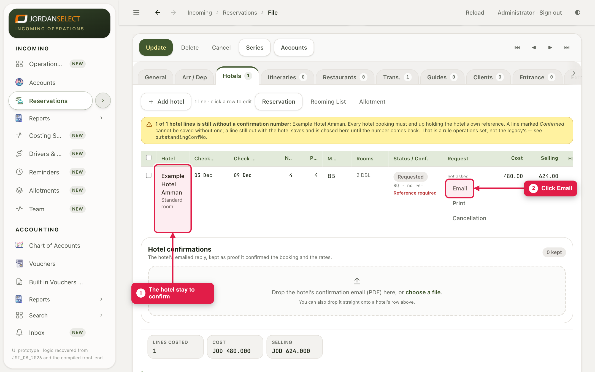
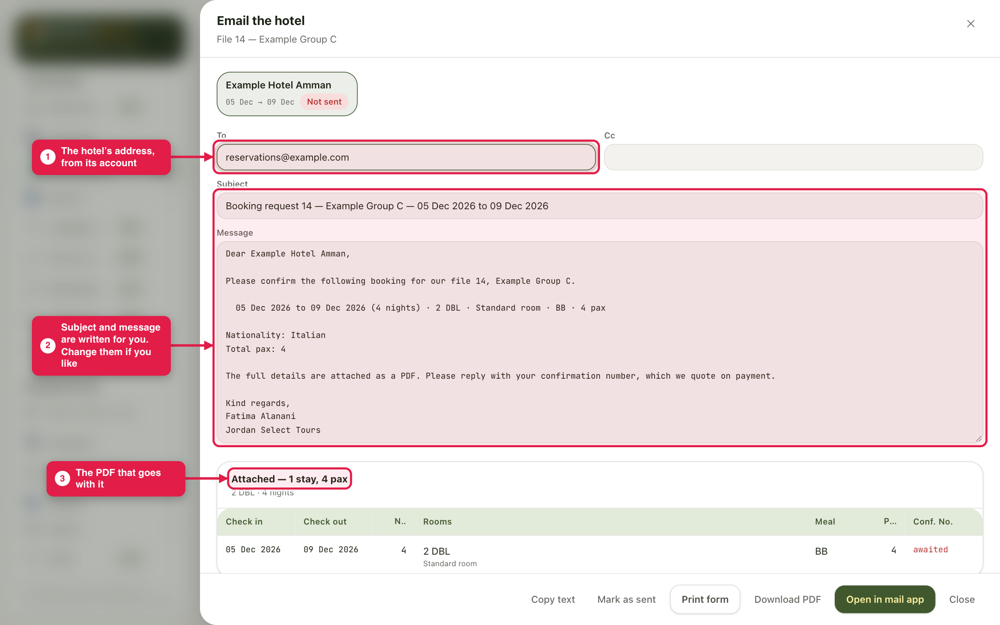
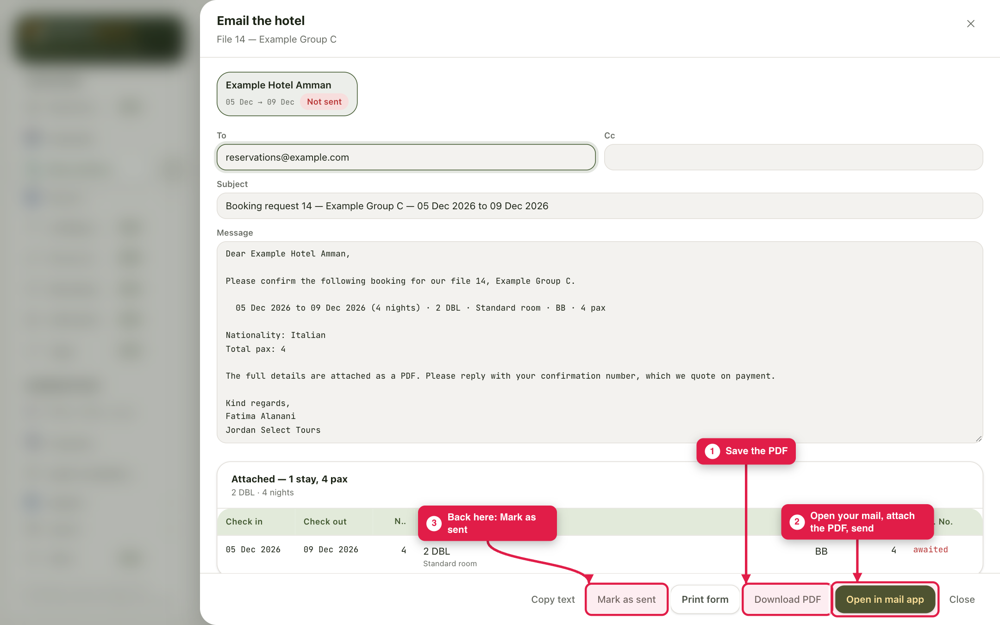
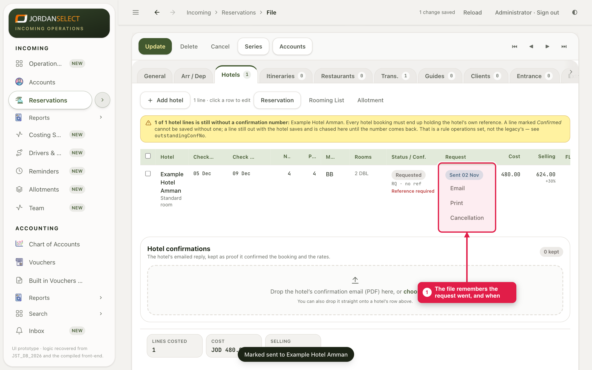
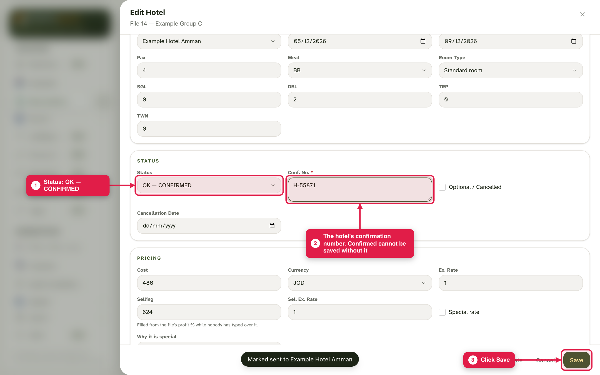
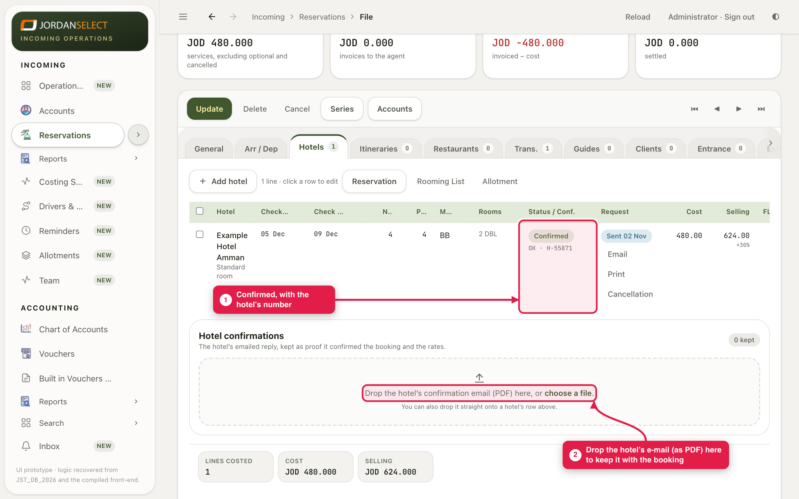

Send the hotel the booking from the file, then record its answer and its confirmation number.
WhoSales
WhereThe file → Hotels tab
Takes2 minutes to send · 1 minute to record the answer
You needYour e-mail, and later the hotel’s reply
How it works
The CRM writes the e-mail and a PDF of the booking for you. You send it from your own mail, then click Mark as sent so the file remembers. When the hotel replies, you change the stay to Confirmed and type its number.
Example in this guide: Example Hotel Amman, 5 to 9 December. The hotel confirms with number H-55871.
1. Send the request
1
On the Hotels tab, find the stay and click Email on its row.

Each hotel row has its own Email button.
2
Check the message. The To address comes from the hotel’s account. The subject and message are written for you; change them if you like. The PDF of the booking goes with it.

Email the hotel. A hotel with two stays on the file gets one e-mail listing both.
3
Click Download PDF to save it, then Open in mail app. Your mail opens with the address, subject and message filled. Attach the PDF and send.
4
Come back to the CRM and click Mark as sent.

The three buttons, in order. The mail app cannot attach the PDF by itself, so attach it before you send.
5
The row now shows that the request went, and when.

Sent. The stay is still RQ until the hotel answers.
2. Record the hotel’s answer
6
When the hotel replies, click the stay’s row. Set Status to OK — CONFIRMED and type the hotel’s number in Conf. No. Click Save.

Confirmed cannot be saved without the hotel’s number.
7
The stay shows Confirmed with the number. Drop the hotel’s e-mail (saved as a PDF) on the box below the list, to keep it with the booking.

The hotel’s e-mail is the proof of the rate it agreed. Keep it on the file.
The hotel says yes but gives no numberLeave the stay on RQ and ask them for the number. A stay with no number is listed on the file and marked “no ref” in Reservations until it has one.
3. Check your work
Every stay shows either “sent” or “Confirmed” with a number.
The hotel’s reply is attached to the stay.
No “no ref” mark is left on the file in Reservations.
Questions? Ask the reservations manager. · Last checked: ____ · Screens shown are from a test copy of the CRM with made-up data.